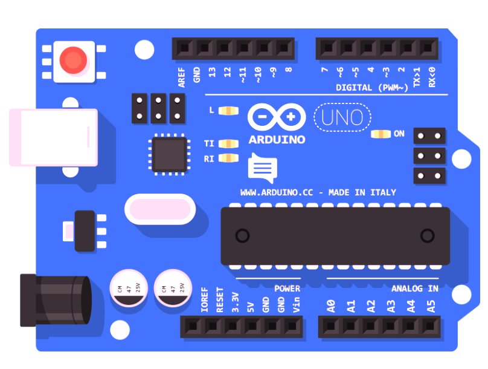
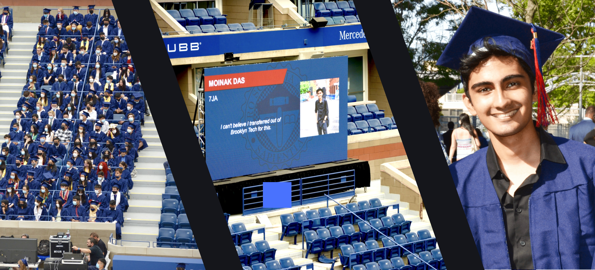

Let's Create Things.
I'm a software and full stack web developer based in New York City, and a Mechanical Engineering student at
Stony Brook University. Over the course of three years, I've had the pleasure of working with numerous origanizations
to improve online presence, conduct regular website maintenenence and troubleshooting, implement software solutions to
streamline workflow, and train interns. I've also had the privilege of working with organizations to tutor children in
underserved communities. My skills make me a capable K-12 tutor for STEM courses.
Download Resume
"Mr. Das made the website more user friendly for our team, who has little knowledge of
computer language and codes. Moinak is a very competent young man who can analyze the tasks
needed to accomplish a goal. We want to thank Moinak for his work and look forward to having
him intern with us again"
- Debbie Van Cura,
The Greater Astoria Historical Society

As a Mechanical Engineering student, I also have experience with 3D modelling and AutoCAD. I have four years of experience
with Autodesk Inventor, Fusion 360, and Blender. Furthermore, I have experience with Arduino wiring and
software development, as well as being able to complete large engineering projects under tight deadlines. My technical skills
include experience with: Android Studio, WordPress, JQuery, Unity, Blender, Fusion 360, and Django. I am able to
implement software solutions written in Python, Java, C#, PHP, HTML, CSS, and Javascript.

Education
Stony Brook University
Long Island, New York
B.E Mechanical Engineering
(2021 - 2025)
Stuyvesant High School
Manhattan, New York
IntroCS, AP Computer Science, Artificial Intelligence
(2018 - 2021)
Brooklyn Technical High School
Brooklyn, New York
Designing and Drafting For Production
(2017 - 2018)
Science Adventure Kids
Instructor
(June 2019 - September 2019)
Managed social media platforms
Taught children elementary-level science concepts
Helped children with disabilities keep up with instruction
Established effective communication with children and coworkers
Responsible for animal care, feedings, and cleanings